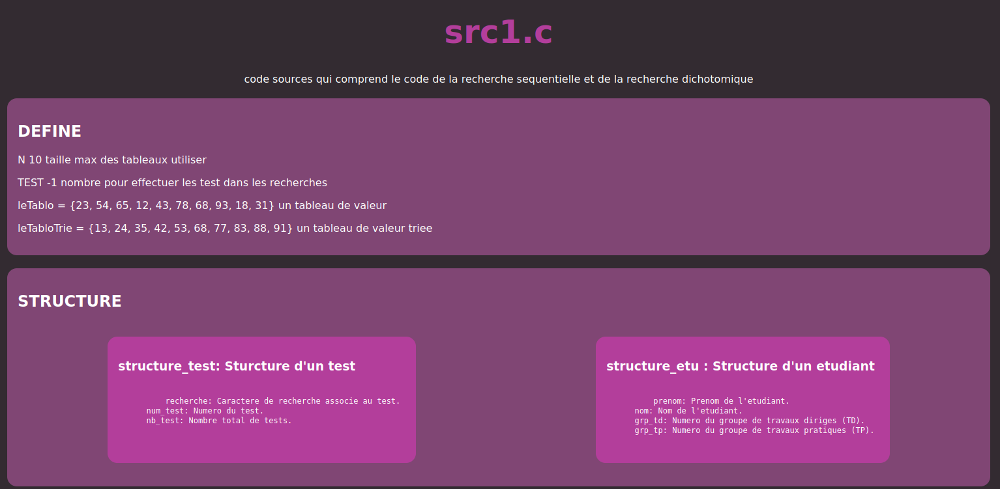

Fichiers C pour stocker les algorithmes et les données initiales.
Ce projet vise à automatiser la création de documentation technique à partir de données extraites de fichiers C, en passant par des étapes de traitement et de conversion. L'approche adoptée utilise Docker pour exécuter des scripts PHP qui interagissent avec les fichiers C, extrayant les informations nécessaires. Les fichiers C contiennent des données ou des algorithmes qui sont ensuite traités par des scripts PHP. Ces scripts sont conçus pour analyser les données des fichiers C et les formater de manière structurée dans un fichier Markdown. Le Markdown, une syntaxe légère et facile à lire, est ensuite converti en HTML pour sa présentation web. L'étape suivante consiste à convertir le HTML généré en PDF, un format idéal pour la distribution et l'impression de la documentation. Cette conversion est également réalisée à l'aide de Docker.

Fichiers C pour stocker les algorithmes et les données initiales.

PHP pour traiter les données des fichiers C, générer le fichier Markdown, et convertir le Markdown en HTML.
HTML pour structurer et présenter la documentation de manière web.
Markdown pour formater les données en un document structuré avant la conversion en HTML.
PDF pour la conversion finale du HTML, permettant une distribution imprimable de la documentation.

Docker pour containeriser l'environnement de développement et de production, assurant une cohérence et une isolation des dépendances.

Github pour la gestion de versions et le partage des fichiers entre les membres du groupe.
Le développement du problème du tour du cavalier s'est déroulé en plusieurs étapes :
La création de la documentation technique a été une démarche complexe mais nécessaire pour garantir la compréhension et la facilité d'utilisation de notre projet. En automatisant le processus de génération de documentation à partir des fichiers C, nous avons non seulement optimisé la productivité mais aussi amélioré la qualité et la précision des informations disponibles pour les développeurs et les utilisateurs finaux. L'utilisation de technologies modernes telles que PHP, Markdown, HTML, et Docker a permis de créer une documentation interactive et facilement accessible, disponible en formats numériques et imprimables. Cette approche a également facilité la collaboration et la gestion des versions grâce à GitHub, assurant ainsi une documentation cohérente et à jour. En somme, le développement de notre documentation technique a renforcé la transparence et la communication autour de notre projet, contribuant ainsi à son succès et à sa pérennité.